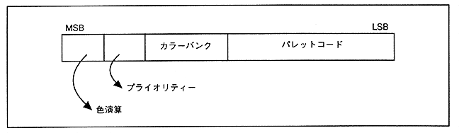

- Color bank method
- Refers to the color stored in the color RAM of VDP2 by combining the color bank with the palette code of 16, 64, 128, 256 colors.
Select the VDP2 color palette in the
- color bank, and select a color from the color palette using the palette code.
- 16, 64, 128, 256 colors can be expressed within one character.
Data written using the
- color bank method is divided into function bits for color operation, priority, color bank, and palette code on the VDP2 side.
Figure 3.7 Color bank configuration

- RGB code generation
∙ RGB (red, green, blue) brightness is expressed with 5 bits each. 32,768 colors can be expressed within one character.
- Color Lookup Table
∙ Define 16 colors in the color lookup table, and select a color from them. One color is 16 bits and can be either RGB code or color bank code.